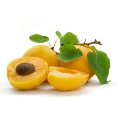

Apricots زردآلو
Content

Seasonal activities: Winter
(mid December through mid March)
- Spray trees with dormant oil to control San Jose scale, aphid eggs, mite eggs and peach twig borer.
- Do not use sulfur on apricots, ever.
Problems and Opportunities
- Priority problems include: include: pollination, planting (bed preparation), grafting, training & pruning, variety selection, Apricot Late Frost
- Priority opportunities include: marketing of fresh and dried apricots to Pakistan, aphid and shot hole control through a dormant oil, Integrated Pest Management and Bordeaux spray.
Overview
- About Apricots Fact Sheet (UC Davis)
Crop Calendar
- Fact Sheet (UC Davis)
Production
-
Fruit Orchard Production Manual English (1.2 MB) and پشتو (Pashto) (1.6 MB) (UC Davis)
- Apricot Value Chain Manual (NUHDA)
- Variety Selection Fact Sheet (UC Davis)
- For certified sapling contact PHDP (Perennial Horticulture Development Project)
- PHDP Varietal Selection and Production English (excerpt), دری (Dari) (9.9 MB) and پشتو (Pashto) (9.8 MB) (ANNGO Catalog 2013, PHDP/EU)
- National Nursery Growers' Association Locations and Contacts PDF (ANNGO Catalog 2013, PHDP/EU)
- Rootstock Selection Fact Sheet (UC Davis)
- Grafting Fact Sheet (1.2 MB) (UC Davis)
- Planting Fact Sheet (UC Davis)
- Pruning and Training Fact Sheet (UC Davis) Manual پشتو (Pashto)
- Intercropping Fact sheet (UC Davis)
- Water Management
- Irrigation of Perennial Crops Manual (1.7 MB) (Roots of Peace)
- Principles of Irrigation of Trees and Vines PPT as PDF English (2.8MB) and (Dari) دری (4.6 MB) (UC Davis)
- Drip Irrigation Manual (11.7MB) (IDE)
- Pollination (example using almond) Fact Sheet English and (Dari) دری (UC Davis)
Pest Management for Apricots
- Common pests in apricots include: shot hole disease, bacterial canker, verticillium wilt, brown rot blossom & twig blight, peach twig borer, mealy plum aphid.
- See Pest Identification Cards and general Pest Management Page
- Nursery Weed Management Fact Sheet English and(Dari) دری (UC Davis for Roots of Peace)
Postharvest
- Apricot Drying Video
- 10 Principles of Postharvest Management Fact Sheet (UC Davis)
- Principles of GAP (Good Agricultural Practices) Fact Sheet (UC Davis)
- Example of Standards Fact Sheet (Fresh Spec)
- Apricot Value Chain Manual (NUHDA)
- General Postharvest Page